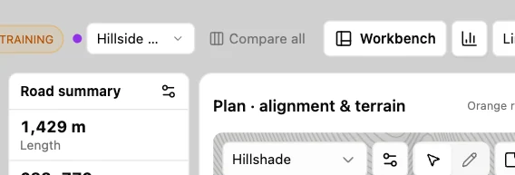
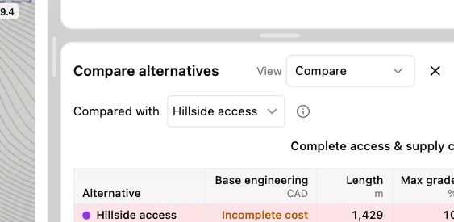
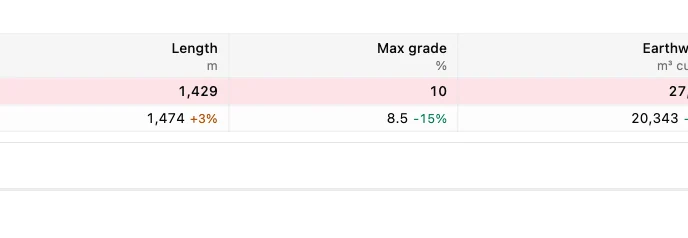
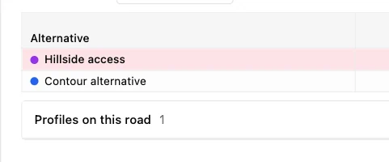
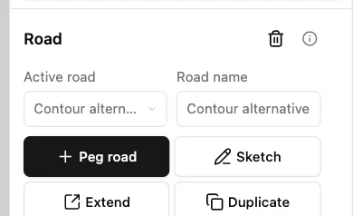

Compare two alignments
Open the Hillside access training project in Engineering workbench. It includes both Hillside access and Contour alternative, so you can compare two roads immediately.
1. Open the comparison
Select Compare all beside the road selector. The detail pane lists the alignments already in the project.

2. Check the baseline
In Compared with, use Hillside access as the baseline. Percentage differences in the other row are measured against this road. Use the pane’s fullscreen control if the table is narrow.

3. Read the trade-off
The contour alternative is longer, 1,474 m versus 1,429 m, but its maximum grade is lower, 8.5% versus 10%. Incomplete cost means the table cannot support a cost ranking for these roads.

4. Select the alternative
Select Contour alternative in the table to make it active. If you expanded the table, exit fullscreen to return to the workbench.

5. Verify the selection
Check Road name in Design. The workbench now shows the contour alternative, so its profile and sections are available for inspection.
